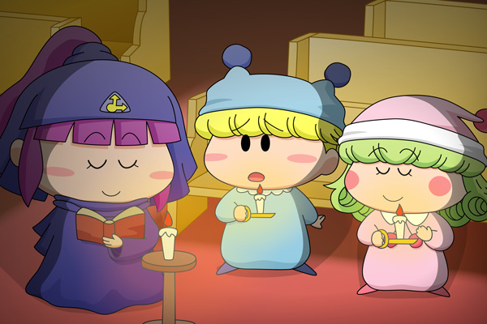

|
ミルモ＆リルム＆ベルル(2)
ミルモ「よぉ、ベルル！」
リルム「こんばんはですわ！」
ベルル「あら？ミルモくんとリルムちゃん。
教会を訪れるのは久しぶりね」
リルム「今夜はミルモ様がわたくしを教会へ連れてきて
くださったのですわ。
もっと小さかった頃は毎年お菓子をもらいに来ていたのが
懐かしいですわね」
ミルモ「お、おい、よせよ・・・。
オレはお菓子をもらったらすぐに帰るからな」
ベルル「相変わらず楽しそうね。
そうだわ、今日は特別に二人に聖書を聞かせてあげることに
しましょう」
ミルモ「聖書〜〜？いいよ別に」
リルム「ミルモ様！！わたくしはベルルさんの聖書を聞きたいですわ！」
ミルモ「ったく・・聞くだけだからな」
ベルル「えーっと、これが良いかしら。
新約聖書 第３２章１節――――」

時間誕生の記念日を翌日に控え、街では晩餐会の準備が行われていた。
晩餐会には街中のお菓子が集められ、テーブルからはたくさんの
甘い匂いがただよっていた。
時を司る主アルルも弟子達とともに晩餐会に招待された。
しかし、晩餐会に参加していたのは裕福な身振りの者ばかりであり、
貧しい者は参加が許されていなかったのも事実である。
「さあ、私たちでこの記念日を祝いましょう！」
かけ声とともに晩餐会が始まった。
しかし主はこう言った。
「いいえ、今すぐこのお菓子を街のみんなに配りなさい」
さらにこう続けられた。
「貧しい者がいれば、お菓子を与えなさい。
そうすればその者は救われる。
病気の者がいれば、お菓子を与えなさい。
そうすればその者は回復する。
愛する者がいれば、お菓子を与えなさい。
そうすればそこに愛は生まれる」―――――
リルム「まぁ、愛ですわ」
ミルモ「ぎくっ。嫌な予感が・・・」
以前描いた絵の続きとして描いてみました。ミルモとリルムはちょっぴり大人になった…いえ、大人っぽく描きすぎたかな？ この後も二人は幸せムードでい続けられるのか、それは皆さんのご想像にお任せします(^^)。それにしても聖書の物語が適当過ぎるな・・・(^^;。(2010/3/30) |